LỜI NÓI ĐẦU
Kính chào các quý độc giả!
Lịch sử chính là nguồn cội, là dòng
chảy thiêng liêng không ngừng trôi đi qua năm tháng.
Nhưng khi mà thời gian càng ngày càng trôi xa, nhưng năm tháng huy hoàng xưa ấy dần mai một. Đặc biệt là khi thời thế đang dần thế thời, cái hiện đại lấn át cái xưa kia. Ngày nay, các bạn trẻ chỉ biết chạy đua với thời đại, chỉ chăm chăm bắt kịp xu hướng nhất thời trước mắt mà quên đi những giá trị sâu sắc phía sau.
Khi được sinh ra trong hòa bình, ta lại càng quên đi xưa kia nhưng năm tháng máu chảy thành sông như thế nào. Những người đã ngã xuống, những trái tim quả cảm đứng lên chiến đấu cho hòa bình Tổ Quốc.
Chính vì nhận ra những điều ấy, chúng tôi đã tạo nên cách thức giúp cho được phần thế hệ trẻ cảm thấy hứng thú hơn về lịch sử bằng cách kết hợp những giá trị hiện đại và giá trị truyền thống để đúc kết lên Dòng Chảy Lịch Sử
Chúng tôi đã sưu tầm được một số những danh tướng tiêu biểu trong lịch sử Việt Nam thời kỳ phong kiến và dùng những ngôn ngữ gần gũi hiện đại nhất để kể lại, nếu có điều gì sai sót, xin hãy phản hồi, chúng tôi rất ghi nhận những đóng góp của quý độc giả!
Chúng tôi xin trân trọng cảm ơn!
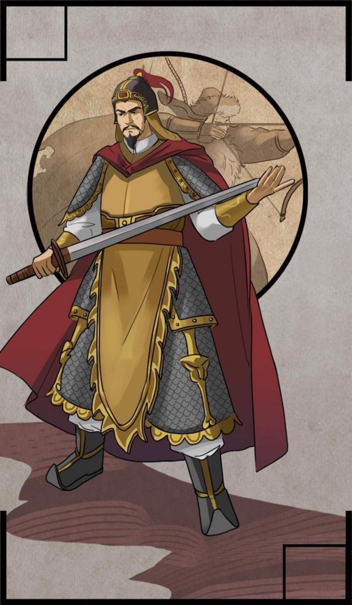
Trần Hưng Đạo
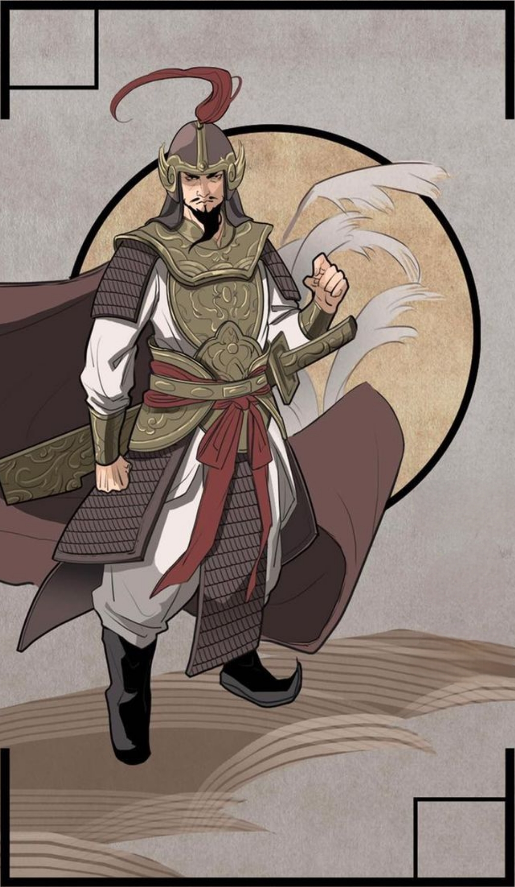
Đinh Bộ Lĩnh
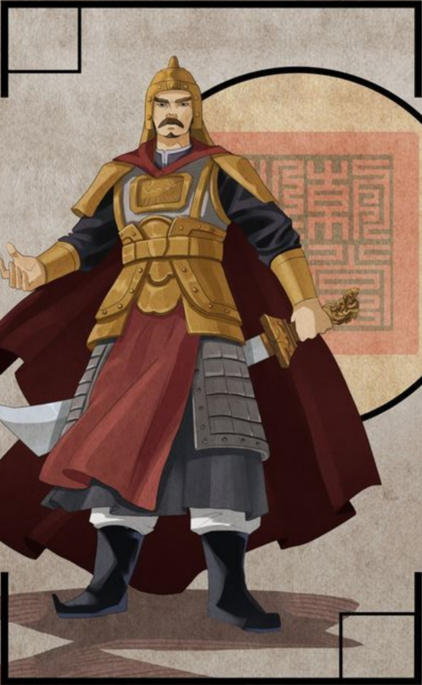
Nguyễn Huệ

Ngô Quyền
Mỗi vị tướng là một chương sử
Mỗi chiến thắng là cái giá của máu, ý chí và lòng yêu nước
Mỗi trận chiến là sự hy sinh của hàng vạn con người chỉ đổi lấy hai chữ "Tự Do"
Hãy bước vào những trang sử hào hùng của dân tộc Việt Nam
Ngô Quyền
898 - 944
TIỂU SỬ VÀ SỰ NGHIỆP
Sinh ra trong một gia đình có thế lực ở Đường Lâm. Từ nhỏ nổi tiếng thông minh, cương nghị và có chí lớn
Trưởng thành dưới quyền Dương Đình Nghệ, nhanh chóng trở thành vị tướng tài năng, được tin cậy giao nhiều trọng trách
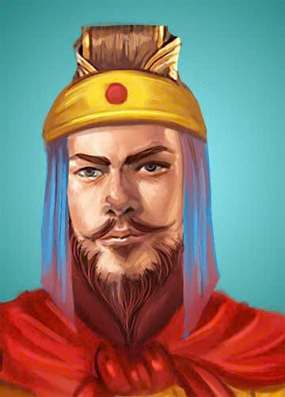
CHIẾN CÔNG
Năm 937, Kiều Công Tiễn phản bội giết chủ, cầu cứu nhà Nam Hán, đẩy đất nước vào thế ngàn cân treo sợi tóc
Đối mặt với quân Nam Hán - một thế lực phong kiến hùng mạnh ở phương Bắc, có lực lượng thủy quân đông đảo và giàu kinh nghiệm chiến đấu
Trước thời khắc hiểm nghèo, ông không lùi bước, ông không chọn sức mạnh, ông chọn trí tuệ
Những hàng cọp gỗ bịt sắt được bí mật đóng xuống lòng sông theo quy luật Thủy Triều, một kế sách giản dị đã chấm dứt 1000 năm đô hộ Phương Bắc
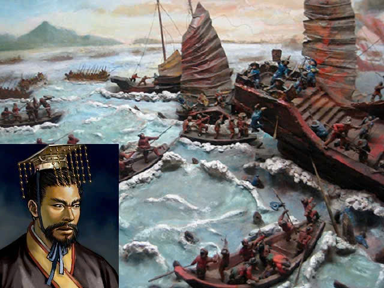
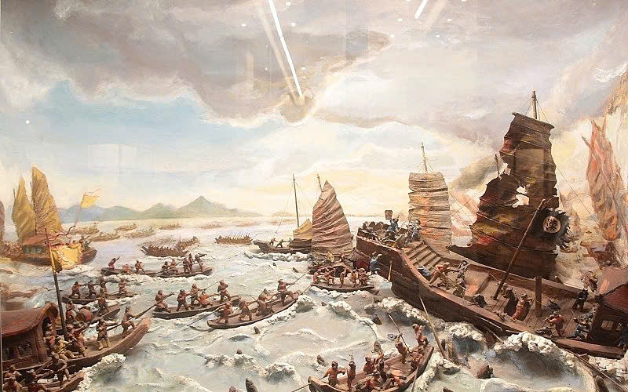
Trận Bạch Đằng (938)
Năm 938, quân Nam Hán tràn sang với lực lượng hùng hậu, khi thủy triều dâng cao, quân ta nhử quân Nam Hán tiến sâu vào cửa sông
Đến lúc nước rút, thuyền địch mắc kẹt vào bãi cọc, đội hình rối loạn
Quân ta từ nhiều phía tấn công quyết liệt, tiêu diệt phần lớn quân địch. Lưu Hoằng Tháo tử trận
THÀNH TỰU VÀ TƯ TƯỞNG
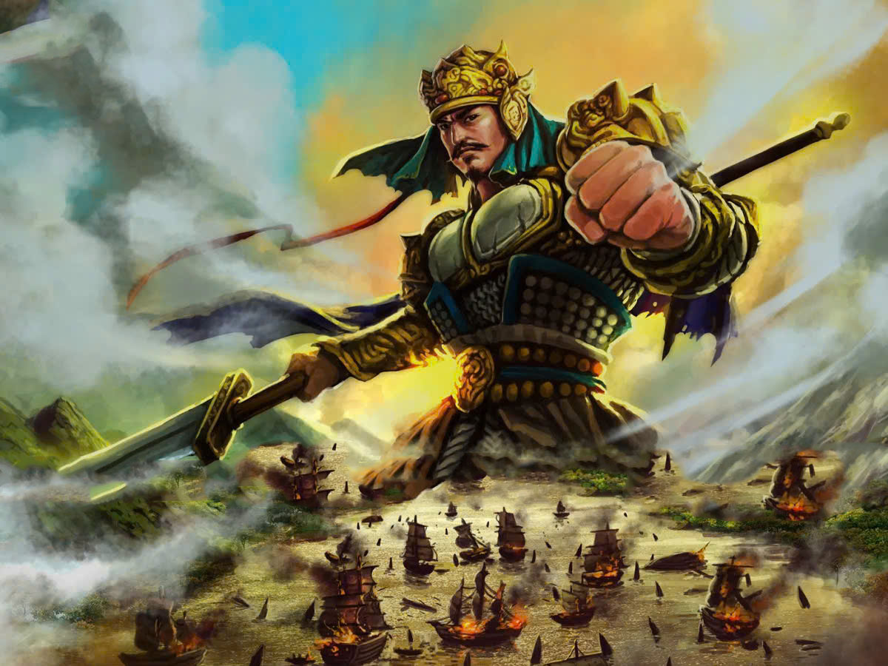
Khoảnh khắc ấy là tiếng sấm của lịch sử, hơn 1.000 năm Bắc thuộc sụp đổ, ông được xem là người mở đầu thời kỳ độc lập tự chủ lâu dài của dân tộc Việt Nam
Đề cao trí tuệ quân sự, lấy mưu lược thắng sức mạnh
Ông để lại cho hậu thế một chân lý không bao giờ cũ, khi ý chí đủ lớn, dân tộc nhỏ bé cũng có thể làm nên kỳ tích vĩ đại
Năm 939, Ngô Quyền lên ngôi vương, đóng đô ở Cổ Loa, đặt nền móng cho nhà nước tự chủ lâu dài. Dù thời gian trị bị không dài, nhưng công lao của ông là vĩnh cử
Ông không chỉ đánh thắng một đạo quân, ông đánh thức niềm tin của cả một dân tộc rằng người Việt hoàn toàn có thể làm chủ vận mệnh của mình
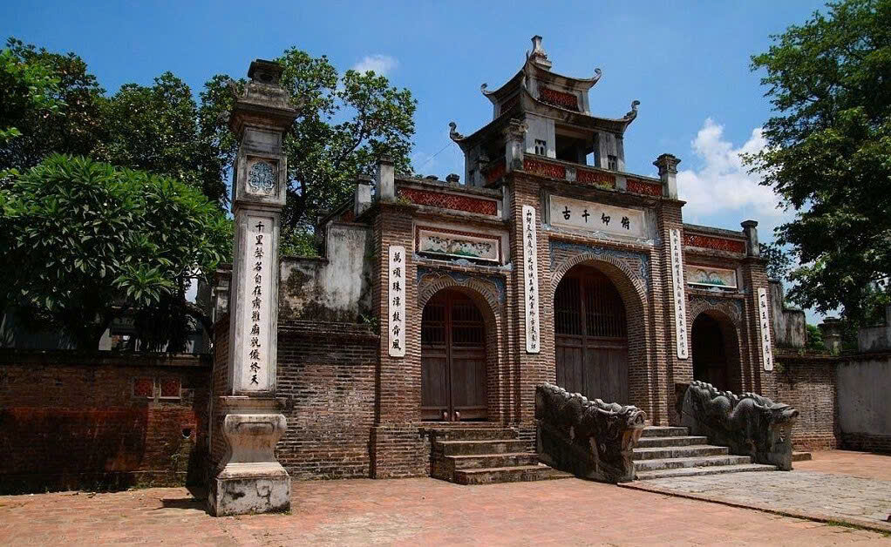
DẤU ẤN ĐỂ LẠI
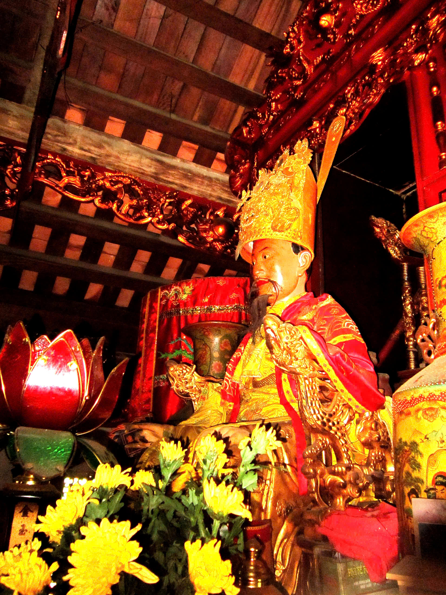
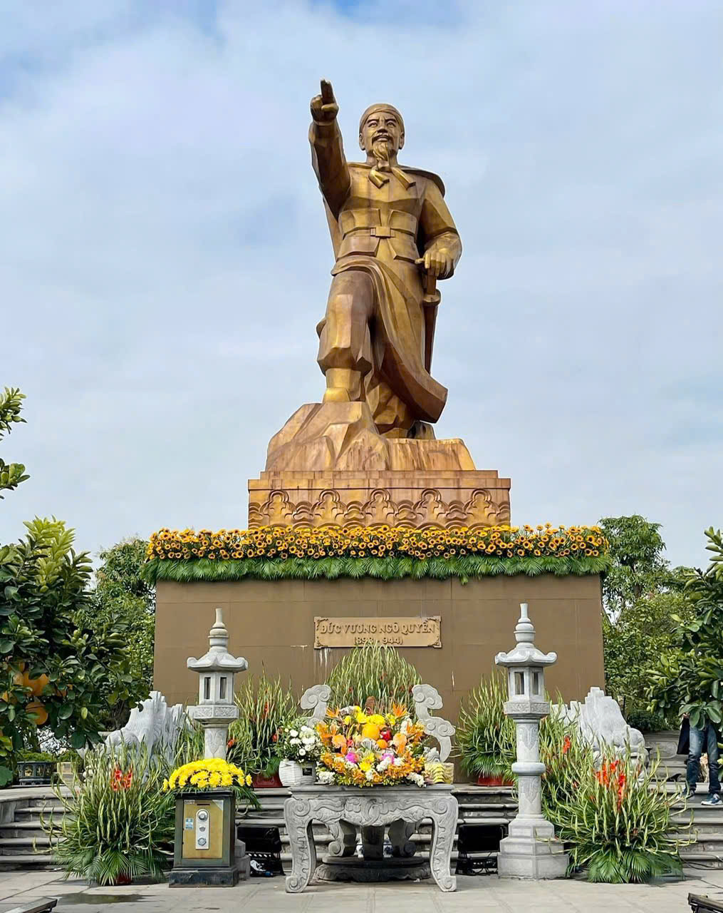
Tên tuổi và công lao được các thế hệ sau ghi nhớ, tôn vinh. Hình tượng Ngô Quyền trở thành biểu tượng của lòng yêu nước, ý chí độc lập và tinh thần tự cường dân tộc
Nhiều đền thờ, lăng mộ và di tích lịch sử được xây dựng để thờ phụng, tưởng nhớ công lao của ông, tiêu biểu như Lăng Ngô Quyền và Đền thờ Ngô Quyền
Ngô Quyền không chỉ thuộc về quá khứ, ông là ngọn lửa đang cháy trong hiện tại, nhắc mỗi chúng ta sống mạnh mẽ hơn, kiên cường hơn và dũng cảm viết lên chiến thắng của chính đời mình.
Đinh Bộ Lĩnh
924-979
TIỂU SỬ VÀ SỰ NGHIỆP
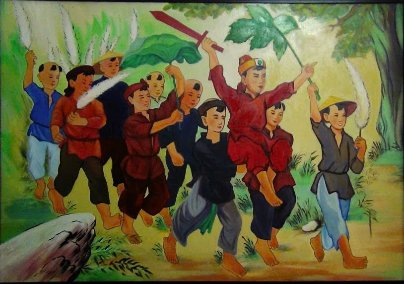
Đinh Bộ Lĩnh sinh tại Hoa Lư (Ninh Bình ngày nay). Thuở nhỏ nổi tiếng với hình ảnh “cờ lau tập trận”, thể hiện tố chất lãnh đạo và ý chí hơn người
Cậu bé lấy cỏ lau làm cờ, tập hợp đám trẻ con. Đánh trận giả, nhưng lòng đã thật. Lớn lên, không dùng miệng để sinh quyền lực, mà dùng kiếm để dựng nên sơn hà
CHIẾN CÔNG
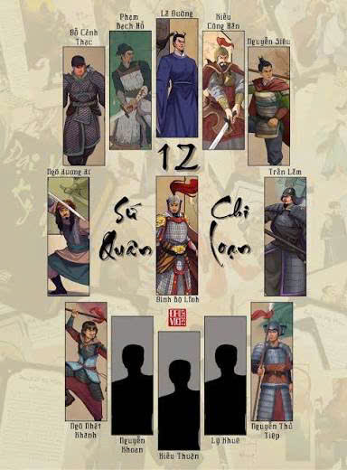
12 sứ quân cát cứ ở nhiều vùng khác nhau, tranh giành quyền lực sau khi nhà Ngô suy yếu
Tình trạng phân tranh khiến đất nước bị chia cắt, nhân dân chịu nhiều khổ cực
Dẹp loạn 12 sứ quân (966-967)
Ông đánh từ Thanh đến Nghệ, từ Hoan đến Ái. Từng bước, từng bước, đánh bại 12 sứ quân. Thống nhất Giang Sơn bằng chiến thắng, không phải thỏa hiệp
Kẻ nào phục, cho sống. Kẻ nào loạn, đánh tận gốc
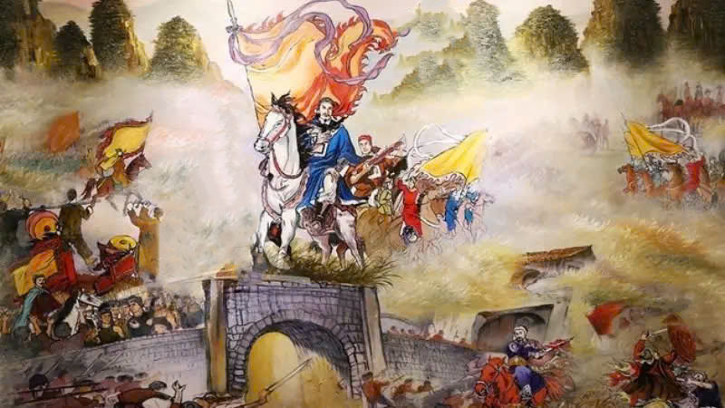
THÀNH TỰU VÀ TƯ TƯỞNG
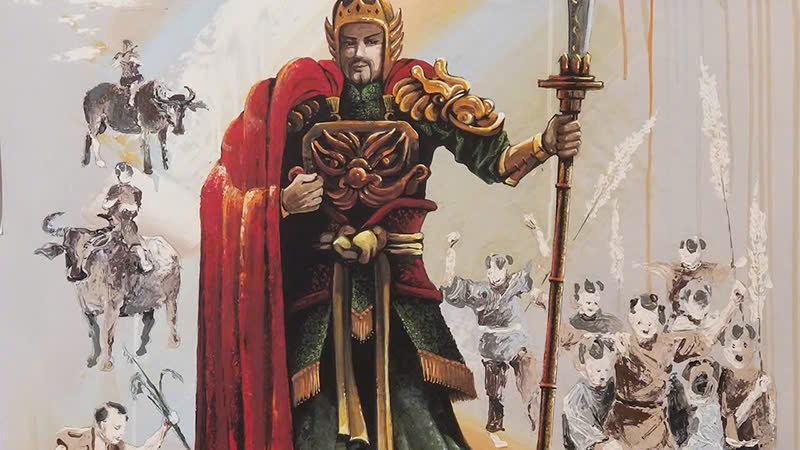
Đinh Bộ Lĩnh không chỉ dẹp yên loạn 12 sứ quân mà còn đặt nền móng cho một quốc gia thống nhất, độc lập và tự chủ
Đề cao tinh thần thống nhất dân tộc và xây dựng quốc gia độc lập, vững mạnh. Thể hiện ý chí quyết đoán, lấy sức mạnh để lập lại trật tự đất nước.
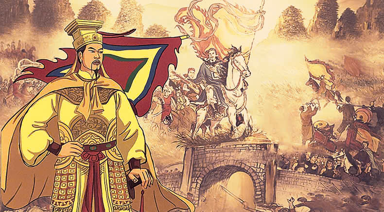
Đặt nền móng cho nhà nước phong kiến độc lập đầu tiên của Việt Nam
Năm 968, ông xưng Hoàng đế đặt tên nước là Đại Cổ Việt. Đóng đô ở Hoa Lư, giữa vùng núi hiểm yếu. Nơi chỉ người quyết thắng mới dám chọn làm kinh đô. Trở thành Hoàng đế đầu tiên của Việt Nam sau thời Bắc thuộc
DẤU ẤN ĐỂ LẠI
Được nhân dân tôn kính và thờ phụng tại nhiều di tích lịch sử, tiêu biểu như Đền Vua Đinh
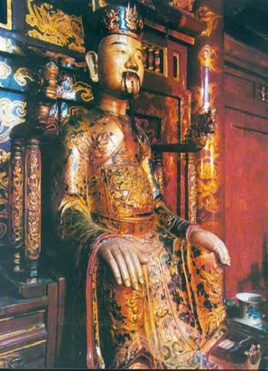
Hình tượng “cờ lau tập trận” trở thành biểu tượng về ý chí và khát vọng lớn lao từ tuổi trẻ
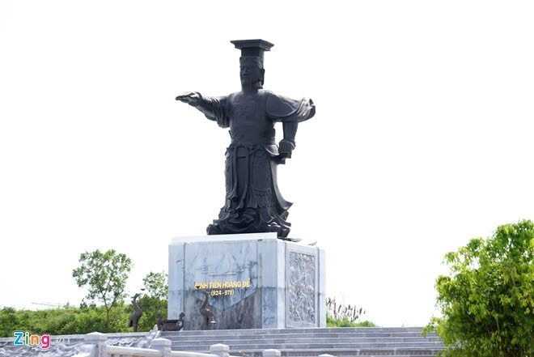
Đinh Bộ Lĩnh không chỉ là một ông vua, ông là kẻ mở đường, là đứa trẻ cầm cỏ lau. Mà cả nghìn năm sau, lịch sử vẫn phải cúi đầu
Trần Hưng Đạo
1226 - 1300
TIỂU SỬ VÀ SỰ NGHIỆP
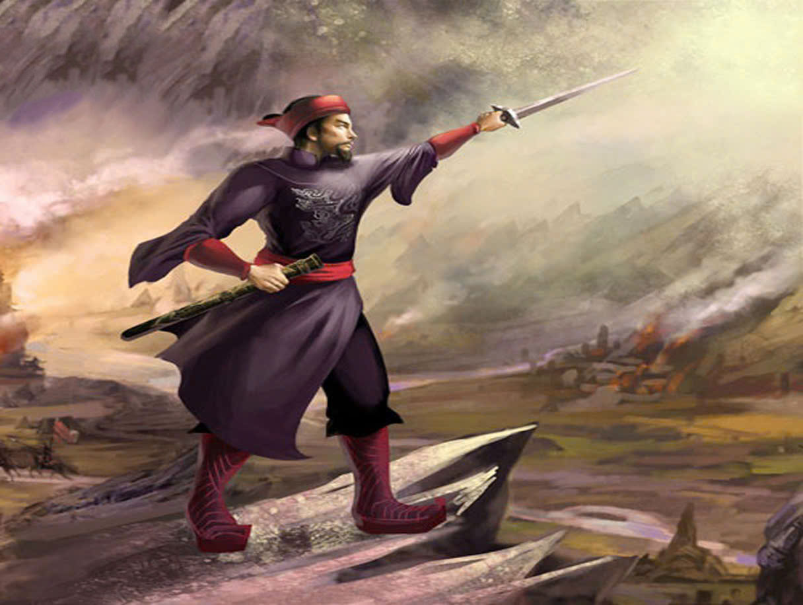
Sinh ra trong hoàng tộc nhà Trần. Ngay từ nhỏ, ông nổi tiếng thông minh học rộng, am hiểu binh pháp và có trí hơn người.
Cha ông từng mang nỗi uất hận vì biến cố trong dòng tộc. Giữa thù riêng và đại nghĩa, ông quyết định Gác thù nhà để giữ yên xã tắc.
Ông hiểu rằng vận mệnh dân tộc luôn lớn hơn mọi ngai vàng
CHIẾN CÔNG
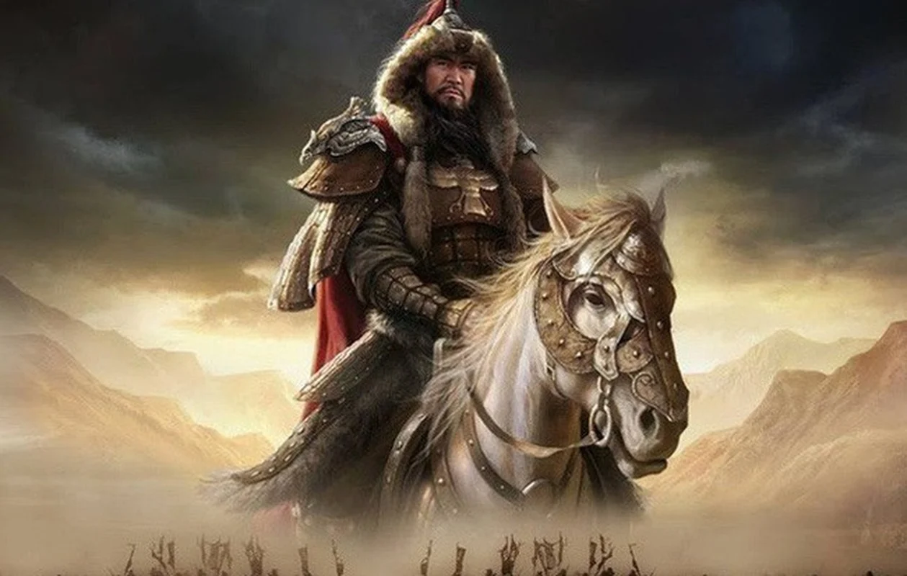
Lúc bấy giờ, quân Nguyên Mông dưới quyền Hốt Tất Liệt là cơn bão quân sự quét qua khắp Á - Âu. Trước thử thách sinh tử của dân tộc, triều đình nhà Trần đã trao cho Trần Quốc trọng trách quốc công tiết chế, thống lĩnh toàn quân
Bằng tài thao lược xuất chúng và tầm nhìn chiếc lược sắc bén, ông đã cùng nhân dân Đại việt viết lên một trong những trang huy hoàng nhất của lịch sử: Ba lần đánh bại quân Nguyên Mông
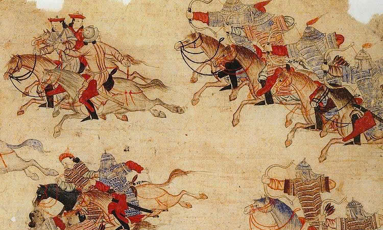
Trận Đông Bộ Đầu (Lần 1 - 1258)
Năm 1258, quân Mông Cổ lần đầu tràn vào Đại Việt với sức mạnh từng khiến nhiều quốc gia khiếp sợ. Trước thế giặc mạnh, quân dân nhà Trần chủ động rút lui để bảo toàn lực lượng rồi bất ngờ phản công tại Đông Bộ Đầu.
Chỉ sau chưa đầy một tháng, quân xâm lược bị đánh bật khỏi bờ cõi Đại Việt
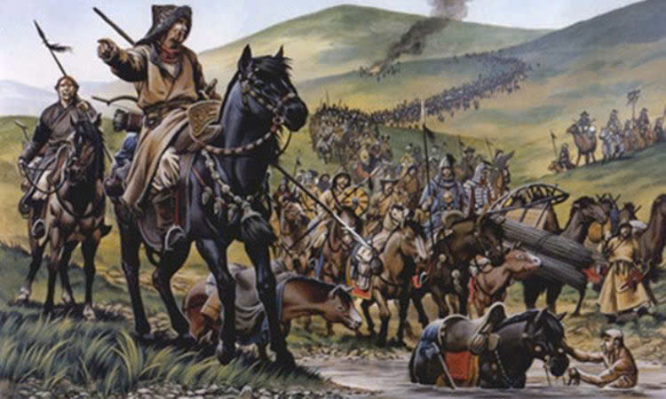
Trận Hàm Tử (Lần 2 - 1285)
Năm 1285, quân Nguyên Mông huy động lực lượng lớn hơn bao giờ hết, tiến đánh Đại Việt từ nhiều hướng. Dưới sự chỉ huy của Trần Hưng Đạo, quân dân nhà Trần kiên cường chiến đấu và giành những chiến thắng vang dội tại Hàm Tử, Chương Dương
Toa Đô bị tiêu diệt, Thoát Hoan phải chui ống đồng chạy về nước, cuộc xâm lược hoàn toàn thất bại
Trận Bạch Đằng (Lần 3 - 1288)
Năm 1288, quân Nguyên Mông tiếp tục kéo sang với quyết tâm chinh phục Đại Việt lần cuối. Trần Hưng Đạo đã xây dựng thế trận tài tình trên sông Bạch Đằng, nhử quân địch vào bãi cọc ngầm rồi phản công quyết định
Hàng trăm chiến thuyền bị đánh chìm, đạo quân xâm lược tan rã, chấm dứt hoàn toàn tham vọng xâm lăng Đại Việt của đế chế Nguyên Mông.
THÀNH TỰU VÀ TƯ TƯỞNG
Không chỉ là một thiên tài quân sự, Trần Quốc Tuấn còn là một nhà tư tưởng lớn luôn lấy nhân dân làm gốc.
Ông để lại những tư tưởng giữ nước vượt thời đại qua tác phẩm Hịch tướng sĩ và lời dặn nổi tiếng: “Khoan thư sức dân để làm kế sâu rễ bền gốc, đó là thượng sách giữ nước.”
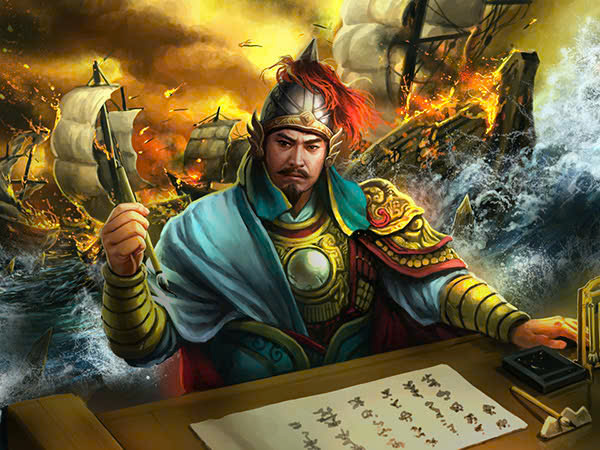
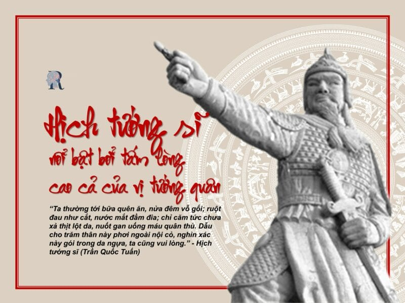
Trước khi đánh thắng quân Nguyên Mông bằng gươm giáo, Trần Quốc Tuấn đã đánh thức lòng yêu nước bằng ngòi bút
Hịch tướng sĩ không chỉ là lời hiệu triệu quân đội, mà còn là tiếng gọi của non sông, khơi dậy ý chí chiến đấu và lòng tự hào dân tộc trong mỗi người Đại Việt
DẤU ẤN ĐỂ LẠI
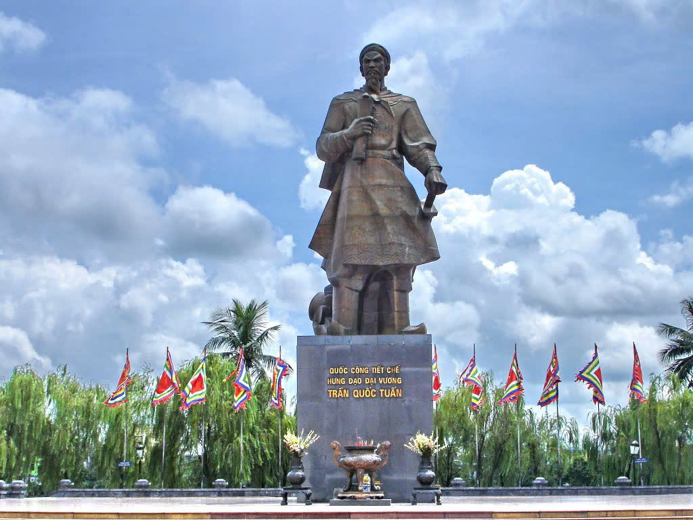
Sau khi qua đời, dân gian Việt Nam suy tôn ông thành Đức Thánh Trần - Cửu Quan Vũ Đế
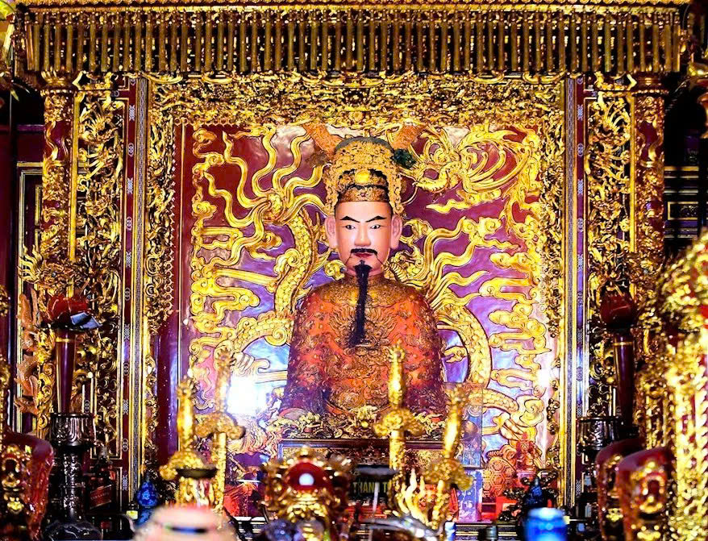
Hơn bảy thế kỷ đã trôi qua, tên tuổi Trần Hưng Đạo vẫn là biểu tượng của lòng yêu nước, ý chí quật cường và tinh thần bảo vệ non sông
Dù không ngồi trên ngai vàng, ông vẫn sống mãi trong trái tim dân tộc Việt Nam.
Nguyễn Huệ
898 - 944
TIỂU SỬ VÀ SỰ NGHIỆP
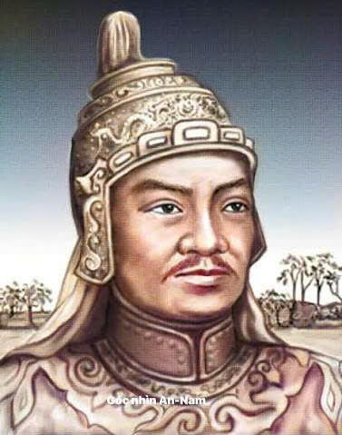
Quang Trung, Nguyễn Huệ xuất thân từ một gia đình bình thường tại vụn đất Tây Sơn. Nguyễn Huệ không có tước vị rực rỡ từ thời nhỏ, nhưng bên trong lớp áo vải ấy là một ý chí sắt đá và một tầm nhìn thiên tài
Ông không đợi vận mệnh gọi tên, ông tự tay tạo ra vận mệnh. Từ cuộc khởi nghĩa của những người nông dân, ông đã tui luyện nên một đội quân kỷ luật đến mức đi không giấu, nấu không khói, sẵn sàng nghiền nát mọi kẻ thù
CHIẾN CÔNG
Quân Thanh xâm lược do Tôn Sĩ Nghị chỉ huy, ngạo mạn tuyên bố sẽ ăn Tết tại Thăng Long, Quang Trung trả lời bằng một cuộc hành quân thần tốc không tưởng
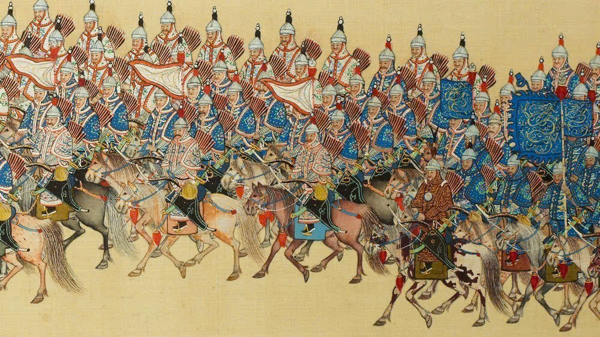
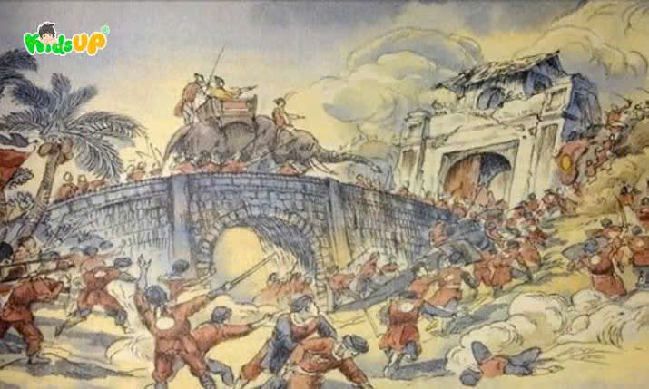
Trận Ngọc Hồi - Đống Đa (1789)
Từ Phú Xuân ra Bắc Hà, ông cho lính vừa đi vừa nghỉ trên võng, thay phiên nhau khiêng để quân đội không bao giờ dừng lại. Đó không chỉ là sức lực, đó là sự đỉnh cao của tổ chức và kỳ lực thép
Đánh cho để dài tóc, đánh cho để đen răng, lời hịch của ông là tiếng sấm báo hiệu sự diệt vong cho kẻ thù
Trận Ngọc Hồi - Đống Đa là minh chứng cho lối đánh áp đảo, mạnh mẽ, bất ngờ và tàn khốc. Quân thanh chưa kịp tỉnh giấc mộng xâm lược đã phải bỏ chạy tán loạn qua sông Hồng
THÀNH TỰU VÀ TƯ TƯỞNG
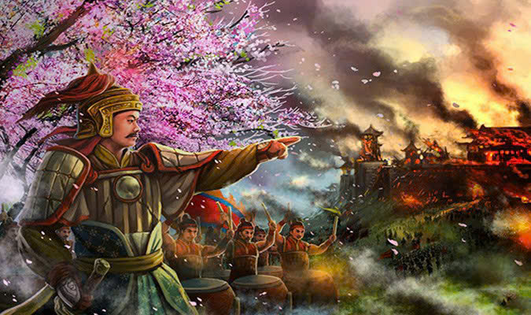
Thế giới nể phục Napoleon vì tốc độ nhưng lịch sử Việt Nam có Quang Trung
Ông được xem là một trong những vị tướng và nhà quân sự kiệt xuất nhất lịch sử Việt Nam
Quang Trung chứng minh rằng sức mạnh không nằm ở số lượng, nó nằm ở tốc độ và tinh thần quyết tử của một dân tập không biết cúi đầu.
Ông dạy chúng ta rằng, thời cơ không tự đến, thời cơ là do chính chúng ta tạo ra bằng tốc độ và lòng dũng cảm
Có nhiều dự định cải cách về giáo dục, kinh tế và quản lý đất nước nhằm xây dựng một quốc gia hùng mạnh
Cuối năm 1788, Nguyễn Huệ lên ngôi Hoàng đế tại Phú Xuân, lấy niên hiệu Quang Trung, trực tiếp lãnh đạo cuộc kháng chiến chống quân Thanh

DẤU ẤN ĐỂ LẠI
Ông ra đi khi tham vọng canh tân đất nước toàn giang rở, để lại niềm tiếc núi khôn ngôi cho lịch sử
Những ngọn lửa từ áo vải cờ đào vẫn luôn giựt cháy trong tim mỗi người Việt
Được nhân dân tôn kính, thờ phụng tại nhiều di tích lịch sử, tiêu biểu như Bảo tàng Quang Trung và Đền thờ Tây Sơn Tam Kiệt
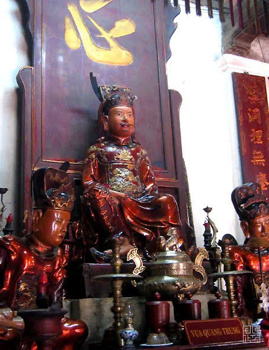
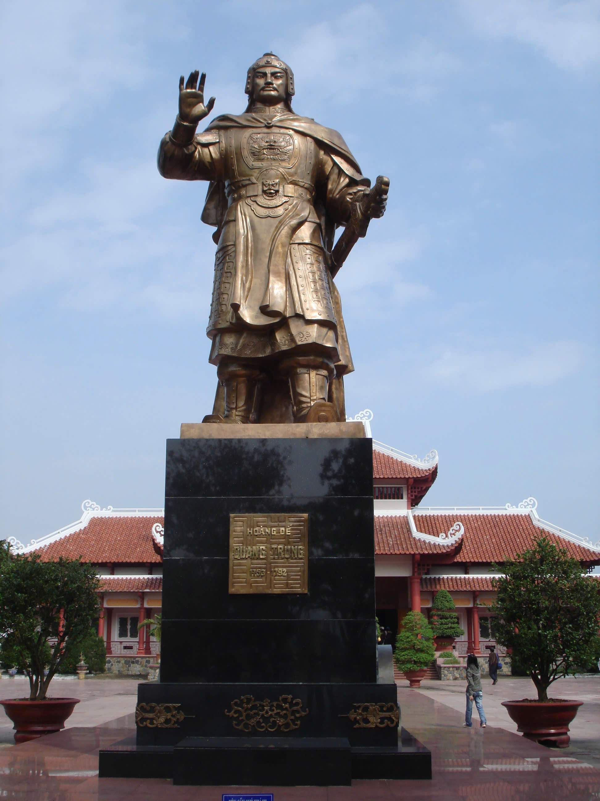
Trong cuộc chơi của cuộc đời, kẻ nhanh hơn và quyết đoán hơn luôn là kẻ chiến thắng